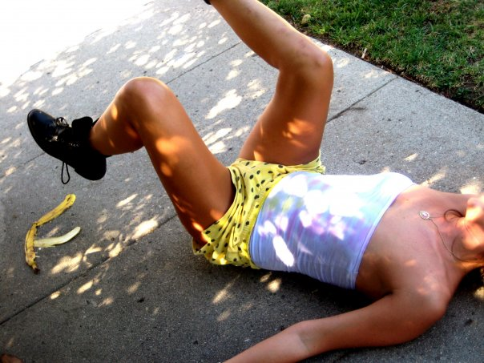

Broken Zipper Comedy is Portland, Oregon based comedy!

– Contact
– Subscribe to our newsletter
– Open mic sign up
– Follow on Instagram
– Follow on Facebook
– Subscribe to our newsletter
– Open mic sign up
– Follow on Instagram
– Follow on Facebook
Allie Furlotti
Allie has always wanted to be a performer. Even though she fell in love with
stand up and sketch comedy, she was too afraid to stand up and try it. But
now she hosts mics and showcases and co-produces shows as Broken Zipper. Allie
loves the community Broken Zipper creates because the audience is supportive
and the comics are diverse and love their craft. Allie has a style of comedy
which is a mix of stories, performance art and weird observations.
Dorothy Geary
When Dorothy started standup, she had no idea she would become so caught
up in the Portland comedy community. The comedians and audience, who
are almost all much younger, welcomed her to standup as a performer and
host. Now Dorothy also loves co-producing Broken Zipper Comedy shows
that represent the full range of diverse comedians and comedic styles
from Portland and out of state comedians. She also actively supports
the growth of new comedians.
© 2019 - 2020
www.brokenzippercomedy.com
Published on <o> future <o>, September 30, 2018.